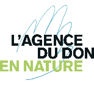
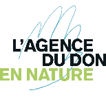

Vous pouvez donner financièrement en
téléchargeant le bon de souscription plus bas et nous le renvoyer accompagné de votre chèque à l’adresse indiqué.
Dans ce cas sachez que votre don donne droit à une réduction d’impôt à hauteur de 66%, dans la limite de 20% de votre revenu imposable.
Nous sommes autorisés à délivrer des reçus fiscaux pour tous dons reçus.
Par exemple, un don de 50€ ne vous coûte en réalité que 17€, un don de 150€ ne vous coûte que 51€ et un don de 500€ ne vous coute que 170€.

 
